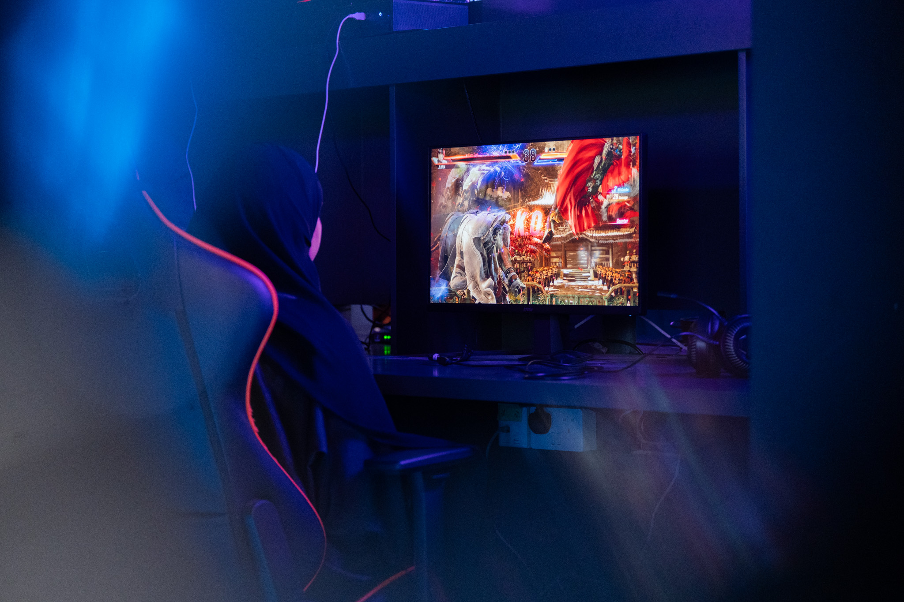

كيف تحوّلت الرياضات الإلكترونية من ترفيه إلى صناعة اقتصادية؟

كيف تحوّلت الرياضات الإلكترونية من ترفيه إلى صناعة اقتصادية؟
السعودية نموذجًا… والخليج يسير في الطريق ذاته.
لم تعد الرياضات الإلكترونية مجرد وسيلة ترفيه يقضي من خلالها الشباب أوقات الفراغ، بل تحوّلت خلال سنوات قليلة إلى واحدة من أسرع الصناعات نموًا في الاقتصاد الرقمي العالمي. فما كان يومًا نشاطًا يمارس داخل غرف المنازل، أصبح اليوم صناعة متكاملة تُدار بمليارات الدولارات، وتستقطب المستثمرين والشركات والجماهير من مختلف أنحاء العالم. وقد غيّرت الرياضات الإلكترونية مفهوم اللعب التقليدي، وأثبتت أن الشغف الرقمي يمكن أن يتحول إلى قوة اقتصادية مؤثرة. فالبطولات العالمية لم تعد مجرد منافسات بين لاعبين، بل أصبحت أحداثًا ضخمة تُقام في قاعات عملاقة، ويتابعها الملايين عبر منصات البث المباشر، وسط حضور إعلامي وتسويقي واسع يشبه ما يحدث في كبرى البطولات الرياضية التقليدية.
لا يقتصر الجانب الاقتصادي في الرياضات الإلكترونية على الجوائز المالية التي يحصل عليها اللاعبون المحترفون، بل يمتد ليشمل منظومة متكاملة من الأنشطة والاستثمارات. فهذه الصناعة تعتمد بصورة كبيرة على الرعايات والإعلانات، حيث تتسابق الشركات للوصول إلى فئة الشباب عبر دعم الفرق والبطولات والفعاليات الرقمية. كما تُعد حقوق البث المباشر مصدرًا رئيسًا للإيرادات، من خلال منصات مثل YouTube وTwitch، التي تحقق أرباحًا ضخمة عبر الإعلانات وعدد المشاهدات والتفاعل الجماهيري. إضافة إلى ذلك، أصبحت البطولات الكبرى تُنظم في مدن تستثمر في البنية التحتية الترفيهية والتقنية، مما ينعكس اقتصاديًا على قطاعات متعددة مثل الضيافة والنقل والسياحة والخدمات. كما نشأت حول هذا المجال سوق تجارية متكاملة تشمل بيع المنتجات الرسمية للفرق، والقمصان، والهدايا التذكارية، وهو ما يجعل الرياضات الإلكترونية قريبة جدًا من النموذج الاقتصادي المعتمد في الرياضات التقليدية العالمية.
برزت مظاهر قوة هذه الصناعة أنها خلقت وظائف جديدة لم تكن معروفة قبل سنوات قليلة. فلم يعد المجال مقتصرًا على اللاعب المحترف فقط، بل ظهرت تخصصات متنوعة مثل مدرب الفرق الإلكترونية، ومحلل الأداء، ومنظم البطولات، ومخرج البث المباشر، ومصمم الجرافيك، ومسؤول التسويق الرقمي، وصانع المحتوى المتخصص في الألعاب. وبهذا أصبحت الرياضات الإلكترونية بيئة تجمع بين الرياضة والإعلام والتقنية وريادة الأعمال في آن واحد. ومن أبرز التجارب العربية التي تكشف قدرة هذا القطاع على التحول إلى قوة اقتصادية متكاملة تجربة المملكة العربية السعودية، التي تبنّت الرياضات الإلكترونية ضمن مستهدفات رؤية السعودية 2030. فقد أطلقت المملكة “الاستراتيجية الوطنية للألعاب والرياضات الإلكترونية”، في خطوة تهدف إلى بناء قطاع رقمي تنافسي قادر على جذب الاستثمارات وصناعة فرص العمل.
تشير التقارير الاقتصادية والمصادر الرسمية إلى أن السعودية تستهدف مساهمة قطاع الألعاب والرياضات الإلكترونية بنحو 50 مليار ريال سعودي في الناتج المحلي الإجمالي بحلول عام 2030، إضافة إلى توفير ما يقارب 39 ألف وظيفة في مجالات مرتبطة بصناعة الألعاب وتنظيم البطولات والتقنيات الرقمية. كما عززت المملكة حضورها العالمي عبر استضافة بطولات دولية كبرى، من أبرزها كأس العالم للرياضات الإلكترونية (Esports World Cup)، التي تجاوزت قيمة جوائزها 70 مليون دولار، في مؤشر واضح على حجم الاستثمار العالمي المتزايد في هذا القطاع. لم يكن هذا النجاح وليد الصدفة، بل جاء نتيجة رؤية استراتيجية شاملة تقوم على دعم حكومي واضح، واستثمارات ضخمة، وبنية تحتية تقنية متقدمة، إضافة إلى شراكات مع شركات ومؤسسات عالمية متخصصة في صناعة الألعاب والترفيه الرقمي. كما أسهمت هذه الفعاليات في تحويل الرياضات الإلكترونية إلى أداة اقتصادية وسياحية تعزز حضور الدولة عالميًا وتدعم قطاعات اقتصادية موازية.
بدأت دول الخليج الأخرى تنظر إلى الرياضات الإلكترونية بوصفها فرصة اقتصادية مستقبلية واعدة. ففي سلطنة عُمان، يظهر اهتمام متزايد بهذا القطاع من خلال تنظيم البطولات المحلية، ودعم المواهب الشابة، وتعزيز دور اللجنة العُمانية للألعاب والرياضات الإلكترونية في نشر ثقافة المنافسة الرقمية. ورغم أن السوق العُماني لا يزال في مرحلة النمو مقارنة بالتجربة السعودية، فإن وجود شريحة شبابية واسعة واهتمام متزايد بالتقنية والاقتصاد الرقمي يمنح هذا المجال فرصًا كبيرة للتطور خلال السنوات القادمة، خاصة إذا تم تعزيز الشراكات مع القطاع الخاص والاستثمار في البنية التحتية وصناعة المحتوى الرقمي.
ختامًا في ضوء هذه التحولات، يمكن القول إن الرياضات الإلكترونية لم تعد مجرد نشاط ترفيهي عابر، بل أصبحت نموذجًا واضحًا لتحول الترفيه إلى صناعة اقتصادية متكاملة تجمع بين التقنية والإعلام والاستثمار. كما تمثل تجربة السعودية مثالًا عربيًا بارزًا على كيفية بناء قطاع رقمي قادر على خلق الوظائف، وجذب الاستثمارات، وتنشيط السياحة، وتعزيز الاقتصاد المعرفي. أما دول الخليج الأخرى، ومن بينها سلطنة عُمان، فهي تقف اليوم أمام فرصة حقيقية للدخول بقوة إلى هذا العالم الجديد، وبناء اقتصاد رقمي ينسجم مع طموحات الشباب ومتطلبات المستقبل.